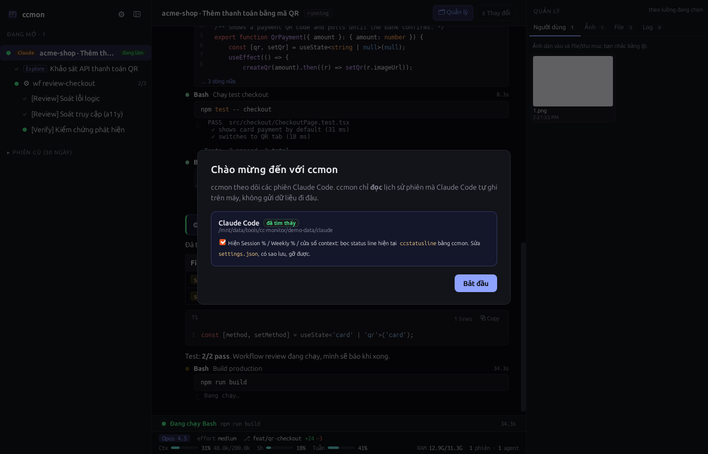
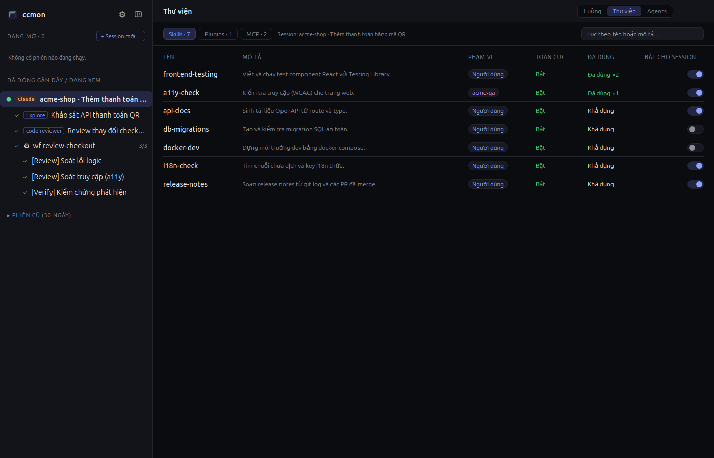

OverviewTổng quan
ccmon reads the transcripts Claude Code already writes on your machine (~/.claude/projects/**/*.jsonl) and shows them as a live, structured view: the main session, every sub-agent and workflow agent, each tool call, background tasks, the files that changed and your plan usage. It comes in two forms:
- Desktop app (
ccmon-gui, built with Tauri) for Windows and Linux — the full experience, including the Library, Agents and the composer for running sessions. - Terminal UI (
ccmon) — a read-only session tree and timeline in your terminal, plus thesetup/uninstall/teehelpers for the status line.
Watching is read-only. ccmon only writes when you act: its own settings, agent files you save from the Agents page, and — if you opt in — a wrapper around your Claude Code status line. See Privacy for the full list.
Interface language. The desktop app and the terminal UI currently ship with a Vietnamese interface; an English UI is planned. This guide names each control in English and gives the Vietnamese label in quotes, e.g. + Session mới… (“new session”).
ccmon đọc transcript mà Claude Code vốn đã ghi trên máy bạn (~/.claude/projects/**/*.jsonl) và hiển thị chúng thành một màn hình có cấu trúc, cập nhật trực tiếp: phiên chính, mọi subagent và agent của workflow, từng lần gọi tool, tác vụ nền, các file đã thay đổi và hạn mức gói. Có hai dạng:
- Ứng dụng desktop (
ccmon-gui, xây bằng Tauri) cho Windows và Linux — đầy đủ tính năng, gồm Thư viện, Agents và ô soạn để chạy session. - Giao diện terminal (
ccmon) — cây phiên và timeline chỉ đọc ngay trong terminal, kèm các lệnhsetup/uninstall/teecho status line.
Theo dõi thì chỉ đọc. ccmon chỉ ghi khi bạn thao tác: cài đặt riêng của nó, file agent bạn lưu từ trang Agents, và — nếu bạn đồng ý — lớp bọc quanh status line của Claude Code. Xem danh sách đầy đủ ở trang Quyền riêng tư.
InstallationCài đặt
Every release on GitHub Releases is built by GitHub Actions on Windows and Ubuntu 22.04 (x64). There is no macOS build at the moment.
Mỗi bản phát hành trên GitHub Releases được GitHub Actions build trên Windows và Ubuntu 22.04 (x64). Hiện chưa có bản cho macOS.
| FileFile | What it isLà gì |
|---|---|
ccmon_<version>_x64-setup.exe | Windows 10/11 installer (NSIS). Installs for your user only, no admin rights needed; downloads WebView2 if it is missing.Bộ cài Windows 10/11 (NSIS). Cài cho riêng tài khoản của bạn, không cần quyền admin; tự tải WebView2 nếu máy chưa có. |
ccmon_<version>_x64_*.msi | Windows installer in MSI format, as an alternative to the .exe.Bộ cài Windows dạng MSI, thay cho file .exe. |
ccmon_<version>_amd64.AppImage | Linux, any distribution: make it executable and run it.Linux, mọi bản phân phối: cấp quyền chạy rồi mở. |
ccmon_<version>_amd64.deb | Linux package for Debian, Ubuntu and derivatives.Gói Linux cho Debian, Ubuntu và các bản dựa trên chúng. |
ccmon-cli-windows-x64.execcmon-cli-linux-x64 | The terminal UI (ccmon) as a single binary.Giao diện terminal (ccmon) dạng một file chạy. |
WindowsWindows
- Download
ccmon_<version>_x64-setup.exe(or the.msi) from the latest release. - Run it. The setup
.exeinstalls for your user only; WebView2 is installed automatically if missing. - Open ccmon from the Start menu and confirm the first-run screen.
- Tải
ccmon_<version>_x64-setup.exe(hoặc file.msi) ở bản phát hành mới nhất. - Chạy file. Bộ cài
.execài cho riêng tài khoản của bạn; WebView2 tự cài nếu máy chưa có. - Mở ccmon từ Start menu rồi xác nhận màn hình chào.
Linux
# AppImage (any distribution)
chmod +x ccmon_*_amd64.AppImage && ./ccmon_*_amd64.AppImage
# or the .deb (Debian / Ubuntu)
sudo apt install ./ccmon_*_amd64.debAfter installing the .deb, open ccmon from your applications menu.
Sau khi cài .deb, mở ccmon từ menu ứng dụng.
Terminal UIGiao diện terminal
Download ccmon-cli-linux-x64 or ccmon-cli-windows-x64.exe, rename it to ccmon (ccmon.exe) and put it on your PATH. The name matters only for ccmon setup, which writes the literal command ccmon tee -- into your status line.
Tải ccmon-cli-linux-x64 hoặc ccmon-cli-windows-x64.exe, đổi tên thành ccmon (ccmon.exe) và đặt vào PATH. Tên file chỉ quan trọng với ccmon setup, vì lệnh này ghi đúng chuỗi ccmon tee -- vào status line.
chmod +x ccmon-cli-linux-x64 && mv ccmon-cli-linux-x64 ~/.local/bin/ccmon
ccmon --helpFrom sourceTừ mã nguồn
You need Rust (stable), Node.js 20+, Yarn 1.x and the Tauri prerequisites for your OS. The full developer setup is on the Contributing page.
Cần Rust (stable), Node.js 20+, Yarn 1.x và các yêu cầu của Tauri cho hệ điều hành của bạn. Hướng dẫn đầy đủ cho lập trình viên ở trang Đóng góp.
git clone https://github.com/wik1ngst-1103/cc-monitor && cd cc-monitor
./gui/build.sh # desktop app → target/release/ccmon-gui
cargo run --release -p cc-monitor # terminal UIRequirementsYêu cầu
- Claude Code, used on the same machine, so that
~/.claude/projectsexists. ccmon was verified against Claude Code 2.1; the transcript format is internal to Claude Code and may change, so unknown lines are skipped rather than breaking the app. - To run sessions from ccmon (optional), the
claudecommand must be found on yourPATH, in~/.local/binor in~/.claude/local(claude.exe/claude.cmdon Windows).
- Claude Code được dùng trên cùng máy, để thư mục
~/.claude/projectstồn tại. ccmon đã được kiểm tra với Claude Code 2.1; định dạng transcript là nội bộ của Claude Code và có thể đổi, nên dòng lạ sẽ được bỏ qua chứ không làm hỏng ứng dụng. - Để chạy session từ ccmon (không bắt buộc), lệnh
claudephải nằm trongPATH,~/.local/binhoặc~/.claude/local(claude.exe/claude.cmdtrên Windows).
First run & setupLần chạy đầu & thiết lập

On first launch the desktop app shows a welcome screen (“Chào mừng đến với ccmon”). It checks whether ~/.claude/projects exists and shows the Claude Code data folder with a found (“đã tìm thấy”) or not found (“chưa thấy”) chip. Press Start (“Bắt đầu”) and ccmon begins watching; nothing has to be installed into Claude Code.
Plan usage through the status line (optional)
Claude Code only gives the 5-hour and weekly limits and the context-window size to its status line command, not to the transcript. The setup screen therefore offers a checkbox (on by default) to wrap your current status line:
# before
"statusLine": { "command": "<your command>" }
# after
"statusLine": { "command": "<path to ccmon-gui> tee -- <your command>" }teesaves a copy of the status-line JSON for ccmon (one file per session in ccmon's cache folder, e.g.~/.cache/ccmon/statusline/on Linux), then runs your original command with the same input and prints its output, so your status line looks exactly the same.- Before writing,
~/.claude/settings.jsonis copied tosettings.json.ccmon.bak; other keys are preserved. If you had no status line, the command becomes just the wrapper. - To undo, open ⚙ and click Remove (“Gỡ”). The terminal UI offers the same through
ccmon setupandccmon uninstall. - Usage numbers appear once Claude Code has refreshed its status line for that session.
The wrapper points at the ccmon executable. Remove it before uninstalling ccmon (or moving the AppImage), otherwise Claude Code's status line command will fail.
Lần đầu mở, ứng dụng desktop hiện màn hình “Chào mừng đến với ccmon”. Nó kiểm tra thư mục ~/.claude/projects và hiển thị đường dẫn dữ liệu Claude Code kèm nhãn “đã tìm thấy” hoặc “chưa thấy”. Bấm Bắt đầu là ccmon bắt đầu theo dõi; không phải cài gì vào Claude Code.
Hạn mức gói qua status line (tuỳ chọn)
Claude Code chỉ đưa hạn mức 5 giờ, hạn mức tuần và kích thước cửa sổ context cho lệnh status line, không ghi vào transcript. Vì vậy màn hình thiết lập có một ô (bật sẵn) để bọc status line hiện tại:
# trước
"statusLine": { "command": "<lệnh của bạn>" }
# sau
"statusLine": { "command": "<đường dẫn ccmon-gui> tee -- <lệnh của bạn>" }teelưu một bản JSON của status line cho ccmon (mỗi session một file trong thư mục cache của ccmon, ví dụ~/.cache/ccmon/statusline/trên Linux), rồi chạy lệnh gốc của bạn với cùng đầu vào và in ra kết quả của nó, nên status line trông y như cũ.- Trước khi ghi,
~/.claude/settings.jsonđược sao lưu thànhsettings.json.ccmon.bak; các khoá khác giữ nguyên. Nếu bạn chưa có status line, lệnh chỉ gồm lớp bọc. - Muốn gỡ, mở ⚙ và bấm Gỡ. Giao diện terminal làm điều tương tự bằng
ccmon setupvàccmon uninstall. - Số liệu hạn mức xuất hiện sau khi Claude Code làm mới status line của session đó.
Lớp bọc trỏ tới file chạy của ccmon. Hãy gỡ nó trước khi gỡ cài đặt ccmon (hoặc di chuyển file AppImage), nếu không lệnh status line của Claude Code sẽ lỗi.
The main windowCửa sổ chính

Session treeCây phiên
- Open sessions (“Đang mở · n”) come first, each with a live
working/waiting-style status badge. Sub-agents and workflow agents are nested under the session that started them. - Below come recently closed sessions, then history: 30 days of past sessions grouped by project. Click a project to expand it and a session to open it.
- + Session mới… starts a new Claude Code session from ccmon (see Composer). ⚙ opens the setup screen.
- Ctrl+B collapses the tree to a narrow rail and back.
- Phiên đang mở (“Đang mở · n”) nằm đầu tiên, mỗi phiên có nhãn trạng thái cập nhật trực tiếp. Subagent và agent của workflow nằm lồng dưới phiên đã tạo ra chúng.
- Tiếp theo là các phiên vừa đóng, rồi lịch sử: 30 ngày phiên cũ nhóm theo dự án. Bấm vào dự án để mở rộng, bấm vào phiên để mở.
- + Session mới… chạy một session Claude Code mới từ ccmon (xem Ô soạn). ⚙ mở màn hình thiết lập.
- Ctrl+B thu gọn cây thành thanh hẹp và mở lại.
HeaderHeader
One slim bar holds the page switch Thread / Library / Agents (Ctrl+1 / 2 / 3), the title and status of the selected thread, a ← button to go back to the previous thread after you jumped into a sub-agent, and ↓ Mới nhất (“latest”) when you have scrolled away from the bottom. On the right are two panel buttons: assets (images, files, log) and Changes.
Một thanh mảnh chứa nút chuyển trang Luồng / Thư viện / Agents (Ctrl+1 / 2 / 3), tiêu đề và trạng thái của luồng đang chọn, nút ← để quay lại luồng trước sau khi nhảy vào một subagent, và nút ↓ Mới nhất khi bạn đã cuộn khỏi cuối. Bên phải là hai nút mở panel: Quản lý (ảnh, file, log) và Thay đổi.
Thread view (timeline)Luồng (timeline)
- Your prompts and the agent's answers, rendered as Markdown (code blocks with line numbers and a copy button).
- Every tool call is a card: Bash with its description and output, Edit as a diff, Read, Grep, Write, todo lists. Expand a card for the full input and result.
- An Agent card links to the sub-agent's own thread: open it to see the brief it received and the report it sent back.
- A Yield card lists what the agent is waiting on — shells, monitors, sub-agents, workflows — with live state and which task woke it. Background Bash and Monitor tasks show status and a live tail of their output.
- The timeline follows new items while you are at the bottom. Long threads load the newest items first; a button at the top loads older ones.
- Under the timeline, an activity line says what is happening now — which tool is running, waiting on an agent, thinking, replying or waiting for you — with the elapsed time.
The model's full reasoning is not shown: Claude Code stores it encrypted or leaves it out of the transcript. ccmon shows what is saved — short progress notes and thinking time.
- Prompt của bạn và câu trả lời của agent, render dạng Markdown (khối code có số dòng và nút sao chép).
- Mỗi lần gọi tool là một thẻ: Bash có mô tả và output, Edit hiện diff, Read, Grep, Write, danh sách việc. Mở rộng thẻ để xem đầy đủ đầu vào và kết quả.
- Thẻ Agent dẫn tới luồng riêng của subagent: mở ra để xem việc được giao và báo cáo gửi về.
- Thẻ Yield liệt kê agent đang chờ gì — shell, monitor, subagent, workflow — với trạng thái trực tiếp và tác vụ nào đã đánh thức nó. Bash và Monitor chạy nền hiện trạng thái và phần cuối output trực tiếp.
- Timeline tự theo mục mới khi bạn ở cuối. Luồng dài nạp mục mới nhất trước; nút ở đầu nạp thêm mục cũ.
- Dưới timeline, dòng hoạt động cho biết đang xảy ra gì — đang chạy tool nào, chờ agent con, suy nghĩ, trả lời hay chờ bạn — kèm thời gian đã trôi.
Không xem được toàn bộ phần suy luận của model: Claude Code lưu nó ở dạng mã hoá hoặc không ghi vào transcript. ccmon hiện những gì có: ghi chú tiến độ ngắn và thời gian suy nghĩ.
Status barThanh trạng thái
Model, context used, the 5-hour and weekly limits, effort, git branch, lines changed and memory. The limits and the exact context-window size need the status-line wrapper; without it the context window is estimated.
Model, context đã dùng, hạn mức 5 giờ và tuần, effort, nhánh git, số dòng thay đổi và bộ nhớ. Hạn mức và kích thước cửa sổ context chính xác cần lớp bọc status line; không có nó thì cửa sổ context là ước lượng.
Assets panel: images, files, logPanel Quản lý: ảnh, file, log
Images you pasted, screenshots the agent took, files it read or wrote, scratchpad output and a ✓/✗ command log for the selected thread, grouped in tabs (“Người dùng”, “Ảnh”, “File”, “Log”). Click an entry for an image or text preview; Markdown files are rendered. Esc closes the panel.
Ảnh bạn dán, ảnh chụp agent tạo, file đã đọc/ghi, output thư mục nháp và log lệnh ✓/✗ của luồng đang chọn, chia theo tab (“Người dùng”, “Ảnh”, “File”, “Log”). Bấm vào một mục để xem trước ảnh hoặc văn bản; file Markdown được render. Esc đóng panel.
Changes and side-by-side diffThay đổi và diff hai cột

Changes (“Thay đổi”) lists every file the session changed. Select one to compare it in two aligned columns, with unchanged regions folded and syntax highlighting. Two baselines are available:
- Before the session — the file as it was before the session first changed it, taken from Claude Code's own file backups (
~/.claude/file-history/). Works without git; files created in the session show as new. - git HEAD —
git show HEAD:<path>, when the file is inside a git work tree.
Thay đổi liệt kê mọi file phiên đã sửa. Chọn một file để so sánh hai cột thẳng hàng, gấp đoạn không đổi và tô màu cú pháp. Có hai bản gốc để so:
- Trước phiên — file như trước khi phiên sửa lần đầu, lấy từ bản sao lưu file của chính Claude Code (
~/.claude/file-history/). Không cần git; file được tạo trong phiên hiện là file mới. - git HEAD —
git show HEAD:<path>, khi file nằm trong một git work tree.
LibraryThư viện

Ctrl+2 opens the Library: skills, plugins and MCP servers, found on disk (~/.claude, the project's .claude/, ~/.claude.json, .mcp.json, installed plugins) or announced by the selected session. For each item you see its scope (user, project, plugin, built-in, managed), whether it is enabled in your Claude Code configuration, and — for the selected session — used ×n or available.
The switch on each row turns the item off for that session only, from its next turn. It applies to sessions run from ccmon, through launch flags; your settings.json, skill, plugin and MCP files are never edited. Items disabled in Claude Code's own configuration show as locked.
Ctrl+2 mở Thư viện: skill, plugin và MCP server có trên đĩa (~/.claude, .claude/ của dự án, ~/.claude.json, .mcp.json, plugin đã cài) hoặc được session đang chọn công bố. Mỗi mục hiện phạm vi (người dùng, dự án, plugin, có sẵn, được quản lý), trạng thái bật trong cấu hình Claude Code, và — với session đang chọn — đã dùng ×n hay khả dụng.
Công tắc ở mỗi dòng tắt mục đó cho riêng session ấy, từ lượt kế tiếp. Nó áp dụng cho session chạy từ ccmon, qua cờ khởi chạy; settings.json, file skill, plugin và MCP không bao giờ bị sửa. Mục bị tắt trong cấu hình của Claude Code hiện ở trạng thái khoá.
Agents & workflowsAgents & workflow

Ctrl+3 opens Agents: built-in, plugin, user and project agents and workflows in one list, with their tools, model, prompt and run history. Click a past run to open its thread.
- Create or edit your own agents. ccmon writes the agent file to
~/.claude/agents(user) or the project's.claude/agents, only after you confirm, and never overwrites a file without asking. Other frontmatter in the file is preserved. - Enabled in ccmon (“Bật trong ccmon”): switching it off blocks that agent or workflow in every session run from ccmon. The file and its history stay; the choice is stored in ccmon's own
registry.json.
Ctrl+3 mở Agents: agent và workflow có sẵn, của plugin, người dùng và dự án trong một danh sách, kèm tool, model, prompt và lịch sử chạy. Bấm vào một lượt chạy cũ để mở luồng của nó.
- Tạo hoặc sửa agent của bạn. ccmon ghi file agent vào
~/.claude/agents(người dùng) hoặc.claude/agentscủa dự án, chỉ sau khi bạn xác nhận, và không ghi đè file nếu chưa hỏi. Phần frontmatter khác trong file được giữ nguyên. - Bật trong ccmon: tắt đi thì agent hoặc workflow đó bị chặn trong mọi session chạy từ ccmon. File và lịch sử vẫn còn; lựa chọn được lưu trong
registry.jsoncủa ccmon.
Composer: run sessionsÔ soạn: chạy session

The composer under the timeline sends prompts to Claude Code for you. ccmon starts the claude you already have as
claude -p --verbose --input-format stream-json --output-format stream-json [--resume <session>] [flags]The conversation is still read back from the transcript, so everything else in ccmon works as for terminal sessions.
- Continue or start. Type in the composer of an existing session, or click + Session mới… in the tree and pick a project folder. Enter sends, Shift+Enter adds a line, Dừng (“stop”) interrupts the running turn.
- Chips for model, effort, permission mode and main agent. They apply from the next turn; ccmon restarts the process between turns when they change, and a “from next turn” chip shows while that is pending.
- Capabilities per session. ⚙ in the composer opens a drawer with tabs for Skills, Plugins, MCP, Agents and Workflows — the same per-session switches as the Library. They become
--disallowedToolsrules and a--settingsfile; yoursettings.jsonis never changed. - @agent mentions. Type
@to pick an agent (↑/↓, Enter or Tab, Esc to close). Mentions are highlighted and listed under the prompt.
Limits, honestly
- No approval dialog. In
-pmode Claude Code cannot ask you to approve a tool, so tools that need approval are denied. Pick a more permissive mode if the task needs them:acceptEdits,plan, orbypassPermissions— which skips every permission check, so use it with care. - Terminal sessions: tmux only. A session that is open in a terminal is never taken over, but if it runs in tmux you can type into it from ccmon (model and effort go as
/modeland/effort, Stop sends Esc). Permission mode, main agent and ⚙ capabilities are launch settings, so they are fixed for a session started in a terminal. ccmon refuses to send while the pane shows a permission or selection dialog, since the Enter after the text would answer it; text you are typing in that pane at the same moment gets mixed with ccmon's. Otherwise, or if it is suspended with Ctrl+Z, the composer is locked and shows the reason. - Subagent controls in a terminal session. Pause and cancel ask Claude to stop the subagent (a foreground subagent is interrupted with Esc), so ccmon cannot confirm the stop: the card reads “đang chờ dừng” until it has stopped, and continue/swap wait until then. In a session run from ccmon, swapping to a newly created or edited agent restarts the session, which stops its other background tasks; the picker warns first.
- Disabled ≠ hidden. Disabled skills and agents are blocked when called, but Claude Code still lists them to the model.
- If
claudecannot be found, the composer is locked with “Không tìm thấy lệnh claude”.
Ô soạn dưới timeline gửi prompt tới Claude Code giúp bạn. ccmon khởi chạy chính lệnh claude trên máy bạn dưới dạng
claude -p --verbose --input-format stream-json --output-format stream-json [--resume <session>] [cờ]Cuộc hội thoại vẫn được đọc lại từ transcript, nên mọi phần khác của ccmon hoạt động như với session ở terminal.
- Tiếp tục hoặc mở mới. Gõ vào ô soạn của một session có sẵn, hoặc bấm + Session mới… trên cây và chọn thư mục dự án. Enter gửi, Shift+Enter xuống dòng, Dừng ngắt lượt đang chạy.
- Chip cho model, effort, chế độ quyền và agent chính. Chúng áp dụng từ lượt sau; ccmon khởi động lại tiến trình giữa hai lượt khi có thay đổi, và một chip “từ lượt sau” hiện trong lúc chờ.
- Capability theo session. Nút ⚙ trong ô soạn mở ngăn có các tab Skills, Plugins, MCP, Agents và Workflows — cùng công tắc theo session như Thư viện. Chúng thành luật
--disallowedToolsvà một file--settings;settings.jsoncủa bạn không bao giờ bị sửa. - Nhắc @agent. Gõ
@để chọn agent (↑/↓, Enter hoặc Tab, Esc để đóng). Agent được nhắc sẽ được tô sáng và liệt kê dưới prompt.
Giới hạn, nói thẳng
- Không có hộp thoại duyệt. Ở chế độ
-p, Claude Code không thể hỏi bạn duyệt tool, nên tool cần duyệt sẽ bị từ chối. Nếu việc cần chúng, hãy chọn chế độ thoáng hơn:acceptEdits,plan, hoặcbypassPermissions— bỏ qua mọi kiểm tra quyền, hãy cẩn thận. - Session ở terminal: chỉ tmux. Session đang mở ở terminal không bao giờ bị tiếp quản, nhưng nếu chạy trong tmux bạn có thể gõ vào đó từ ccmon (model và effort gửi dạng
/model,/effort, Dừng gửi Esc). Chế độ quyền, agent chính và capability (⚙) là cấu hình lúc khởi động, nên cố định với session khởi động ở terminal. ccmon từ chối gửi khi pane đang hiện hộp thoại duyệt quyền hay lựa chọn, vì phím Enter sau nội dung sẽ trả lời hộp thoại đó; chữ bạn đang gõ dở trong pane cùng lúc sẽ bị trộn với nội dung ccmon gửi. Ngoài tmux, hoặc bị treo bằng Ctrl+Z, ô soạn bị khoá và hiện lý do. - Điều khiển subagent ở session terminal. Dừng và Hủy là nhờ Claude dừng subagent (subagent tiền cảnh bị ngắt bằng Esc), nên ccmon không xác nhận được: thẻ hiện “đang chờ dừng” tới khi nó dừng hẳn, Tiếp tục/Đổi agent phải chờ tới lúc đó. Ở session do ccmon chạy, đổi sang agent vừa tạo hoặc vừa sửa sẽ khởi động lại session, làm dừng các tác vụ nền khác của nó; hộp chọn báo trước.
- Tắt ≠ ẩn. Skill và agent bị tắt sẽ bị chặn khi gọi, nhưng Claude Code vẫn liệt kê chúng cho model.
- Nếu không tìm thấy
claude, ô soạn bị khoá với thông báo “Không tìm thấy lệnh claude”.
Keyboard shortcuts (desktop)Phím tắt (desktop)
| KeysPhím | ActionTác dụng |
|---|---|
| Ctrl+1 / 2 / 3 | Thread / Library / AgentsLuồng / Thư viện / Agents |
| Ctrl+B | Collapse or expand the session treeThu gọn hoặc mở cây phiên |
| Enter / Shift+Enter | Send prompt / new line (composer)Gửi prompt / xuống dòng (ô soạn) |
| @ | Mention an agent (composer)Nhắc một agent (ô soạn) |
| Esc | Close a panel, dialog or the mention listĐóng panel, hộp thoại hoặc danh sách nhắc |
On macOS-style keyboards ⌘ works in place of Ctrl.
Trên bàn phím kiểu macOS, ⌘ dùng thay cho Ctrl.
Terminal UIGiao diện terminal
ccmon is a read-only monitor in the terminal: a session tree on the left and the timeline of the selected thread on the right, with a status bar for model, context and limits. It cannot run sessions or change capabilities.
ccmon là bảng theo dõi chỉ đọc trong terminal: cây phiên bên trái và timeline của luồng đang chọn bên phải, kèm thanh trạng thái cho model, context và hạn mức. Nó không chạy session và không đổi capability.
ccmon # sessions active in the last 30 minutes
ccmon --all # also sessions active in the last 24 hours
ccmon --session 3f2a # only sessions whose id starts with 3f2a
ccmon setup [-y] # wrap statusLine in ~/.claude/settings.json with `ccmon tee --` (asks first; -y skips)
ccmon uninstall # remove the `ccmon tee --` wrapper
ccmon tee -- <command> # used inside statusLine: snapshot the JSON, then run <command>
ccmon --version | --help| KeysPhím | ActionTác dụng |
|---|---|
| Tab / Shift+Tab | Switch between tree and timeline (shows the tree if hidden)Chuyển giữa cây và timeline (hiện cây nếu đang ẩn) |
| ↑ ↓ · k j | Move the selectionDi chuyển lựa chọn |
| PgUp PgDn | Move one pageDi chuyển một trang |
| g / Home · G / End | First / last itemMục đầu / cuối |
| ← h · → l | Focus tree / timelineChọn cây / timeline |
| Enter | Tree: go to the timeline. Timeline: open the item (e.g. jump into a sub-agent's thread)Trên cây: sang timeline. Trên timeline: mở mục (ví dụ nhảy vào luồng của subagent) |
| Space | Expand or collapse the item under the cursorMở rộng hoặc thu gọn mục dưới con trỏ |
| Esc | Back to the previous threadQuay lại luồng trước |
| f | Toggle follow (stick to the newest item)Bật/tắt follow (bám mục mới nhất) |
| t | Show or hide the treeẨn/hiện cây |
| q · Ctrl+C | QuitThoát |
The mouse wheel scrolls the pane under the pointer. Set NO_POWERLINE=1 for a plain status bar if your terminal font has no Powerline glyphs.
Con lăn chuột cuộn pane dưới con trỏ. Đặt NO_POWERLINE=1 để dùng thanh trạng thái đơn giản nếu font terminal không có ký tự Powerline.
Configuration & filesCấu hình & file
There is no settings file to edit by hand; everything is set from the app. For reference, this is where ccmon keeps its state (config folder: ~/.config/ccmon/ on Linux, %APPDATA%\ccmon\ on Windows):
Không có file cài đặt nào phải sửa tay; mọi thứ được chỉnh trong ứng dụng. Để tham khảo, đây là nơi ccmon lưu trạng thái (thư mục cấu hình: ~/.config/ccmon/ trên Linux, %APPDATA%\ccmon\ trên Windows):
| PathĐường dẫn | ContentsNội dung |
|---|---|
config.json | First-run done, which tools to monitor (setupDone, claude, codex; Codex monitoring is currently switched off in the code).Đã qua màn hình chào chưa, theo dõi công cụ nào (setupDone, claude, codex; theo dõi Codex hiện đang tắt trong code). |
overlays/<session>.json | Per-session choices: model, effort, permission mode, main agent, disabled capabilities.Lựa chọn theo session: model, effort, chế độ quyền, agent chính, capability bị tắt. |
defaults.json | The same choices for new sessions.Các lựa chọn đó cho session mới. |
registry.json | Agents and workflows switched off in ccmon.Agent và workflow bị tắt trong ccmon. |
launch/*.settings.json | Generated --settings files for sessions run from ccmon.File --settings sinh ra cho session chạy từ ccmon. |
cachecache …/ccmon/statusline/ | Status-line snapshots written by tee (in the OS cache folder, e.g. ~/.cache).Bản chụp status line do tee ghi (trong thư mục cache của hệ điều hành, ví dụ ~/.cache). |
Environment variables and launch optionsBiến môi trường và tuỳ chọn khởi chạy
| NameTên | EffectTác dụng |
|---|---|
CCMON_CLAUDE_DIR | Use another Claude Code data folder instead of ~/.claude.Dùng thư mục dữ liệu Claude Code khác thay cho ~/.claude. |
CCMON_CONFIG | Path of config.json; ccmon's other state files live next to it.Đường dẫn config.json; các file trạng thái khác của ccmon nằm cạnh nó. |
CCMON_CACHE_DIR | Base folder for status-line snapshots.Thư mục gốc cho bản chụp status line. |
CCMON_SELECT, --select <key> | Desktop app: thread to open at startup, e.g. m:<session id>.Ứng dụng desktop: luồng mở khi khởi động, ví dụ m:<session id>. |
--diff <path>, --view <path> | Desktop app: open the Changes panel on that file's diff, or the file viewer.Ứng dụng desktop: mở panel Thay đổi ở diff của file đó, hoặc trình xem file. |
NO_POWERLINE | Terminal UI: plain status bar.Giao diện terminal: thanh trạng thái đơn giản. |
The first three are mainly for tests and demos: python3 demo/make_demo.py /tmp/ccmon-demo (in the source tree) generates a fake dataset and prints them as JSON, so you can try ccmon without your own sessions.
Ba biến đầu chủ yếu dành cho kiểm thử và demo: python3 demo/make_demo.py /tmp/ccmon-demo (trong mã nguồn) tạo bộ dữ liệu giả và in chúng ra dạng JSON, để bạn thử ccmon mà không cần session thật.
Troubleshooting & FAQXử lý sự cố & câu hỏi
No sessions show up
Open ⚙ and check that the Claude Code folder is marked found. ccmon looks for ~/.claude/projects; if your data lives elsewhere, start ccmon with CCMON_CLAUDE_DIR pointing at it. A brand-new session appears once Claude Code has written its first transcript line. In the terminal UI, use --all to include sessions idle for more than 30 minutes.
The status bar has no 5-hour / weekly limits
Those numbers only reach ccmon through the status-line wrapper. Enable it in ⚙, then let Claude Code refresh its status line in that session.
The composer is locked: “Session terminal không chạy trong tmux — chỉ xem”
The session is open in a terminal that ccmon cannot type into. This one is not in tmux; a session suspended with Ctrl+Z or with another command in the foreground shows “Session không ở tiền cảnh trong pane tmux (bị Ctrl+Z hoặc đang chạy lệnh khác) — chỉ xem”. Continue it there, run Claude Code inside tmux, or close it and continue from ccmon.
“Không tìm thấy lệnh claude” (claude not found)
ccmon looks for claude on PATH, in ~/.local/bin and in ~/.claude/local. Install Claude Code or add its folder to PATH, then restart ccmon. Desktop launchers may use a different PATH from your shell.
A session run from ccmon says a tool was denied
Sessions run from ccmon use claude -p, which has no approval dialog. Choose acceptEdits, plan or bypassPermissions in the permission chip; it applies from the next turn.
I disabled a skill but the model still mentions it
Expected: Claude Code still lists disabled skills and agents to the model, but calls to them are blocked. Plugins and MCP servers that are switched off are removed from the session's tool list.
The window is blank on Linux
This is usually WebKitGTK failing to use the GPU. Starting ccmon with WEBKIT_DISABLE_DMABUF_RENDERER=1 (the project's CI uses it for its headless smoke test) often helps.
How do I uninstall cleanly?
First remove the status-line wrapper (⚙ → Remove, or ccmon uninstall), then uninstall the app as usual. Delete the config folder (~/.config/ccmon/ or %APPDATA%\ccmon\) and …/ccmon/statusline/ in your cache folder to remove ccmon's state. Agent files you created stay in .claude/agents.
Does ccmon send my code or prompts anywhere?
No. ccmon makes no network requests of its own and has no telemetry. Sessions you run from ccmon are ordinary Claude Code sessions using your own claude. Details on the Privacy page.
Is ccmon made by Anthropic?
No. ccmon is an independent community project, not affiliated with or endorsed by Anthropic. Claude Code is a product and trademark of Anthropic.
Something else is wrong
Open an issue with your OS, ccmon version and claude --version. Please remove private code and prompts from screenshots and logs.
Không thấy phiên nào
Mở ⚙ và kiểm tra thư mục Claude Code có nhãn đã tìm thấy. ccmon tìm ~/.claude/projects; nếu dữ liệu nằm chỗ khác, chạy ccmon với CCMON_CLAUDE_DIR trỏ tới đó. Session mới xuất hiện khi Claude Code đã ghi dòng transcript đầu tiên. Ở giao diện terminal, dùng --all để thấy cả phiên đã nghỉ hơn 30 phút.
Thanh trạng thái không có hạn mức 5 giờ / tuần
Các số này chỉ tới được ccmon qua lớp bọc status line. Bật nó trong ⚙, rồi chờ Claude Code làm mới status line trong session đó.
Ô soạn bị khoá: “Session terminal không chạy trong tmux — chỉ xem”
Session đang mở ở terminal mà ccmon không gõ vào được. Thông báo này là do session không ở trong tmux; session bị treo bằng Ctrl+Z hoặc đang chạy lệnh khác ở tiền cảnh sẽ hiện “Session không ở tiền cảnh trong pane tmux (bị Ctrl+Z hoặc đang chạy lệnh khác) — chỉ xem”. Hãy tiếp tục ở terminal, chạy Claude Code trong tmux, hoặc đóng nó rồi tiếp tục từ ccmon.
“Không tìm thấy lệnh claude”
ccmon tìm claude trong PATH, ~/.local/bin và ~/.claude/local. Cài Claude Code hoặc thêm thư mục của nó vào PATH, rồi mở lại ccmon. Trình khởi chạy của desktop có thể dùng PATH khác với shell của bạn.
Session chạy từ ccmon báo tool bị từ chối
Session chạy từ ccmon dùng claude -p, không có hộp thoại duyệt. Chọn acceptEdits, plan hoặc bypassPermissions ở chip quyền; áp dụng từ lượt sau.
Đã tắt một skill mà model vẫn nhắc tới
Bình thường: Claude Code vẫn liệt kê skill và agent bị tắt cho model, nhưng lời gọi tới chúng bị chặn. Plugin và MCP server bị tắt thì bị gỡ khỏi danh sách tool của session.
Cửa sổ trắng trơn trên Linux
Thường do WebKitGTK không dùng được GPU. Chạy ccmon với WEBKIT_DISABLE_DMABUF_RENDERER=1 (CI của dự án dùng biến này cho bài kiểm thử không màn hình) thường giúp được.
Gỡ cài đặt sạch sẽ thế nào?
Trước tiên gỡ lớp bọc status line (⚙ → Gỡ, hoặc ccmon uninstall), rồi gỡ ứng dụng như bình thường. Xoá thư mục cấu hình (~/.config/ccmon/ hoặc %APPDATA%\ccmon\) và …/ccmon/statusline/ trong thư mục cache để xoá trạng thái của ccmon. File agent bạn đã tạo vẫn nằm trong .claude/agents.
ccmon có gửi code hay prompt của tôi đi đâu không?
Không. ccmon không tự gọi mạng và không có telemetry. Session bạn chạy từ ccmon là session Claude Code bình thường, dùng chính lệnh claude của bạn. Chi tiết ở trang Quyền riêng tư.
ccmon có phải của Anthropic không?
Không. ccmon là dự án cộng đồng độc lập, không liên kết và không được Anthropic bảo trợ. Claude Code là sản phẩm và thương hiệu của Anthropic.
Lỗi khác
Mở một issue kèm hệ điều hành, phiên bản ccmon và kết quả claude --version. Vui lòng xoá code và prompt riêng tư khỏi ảnh chụp và log.